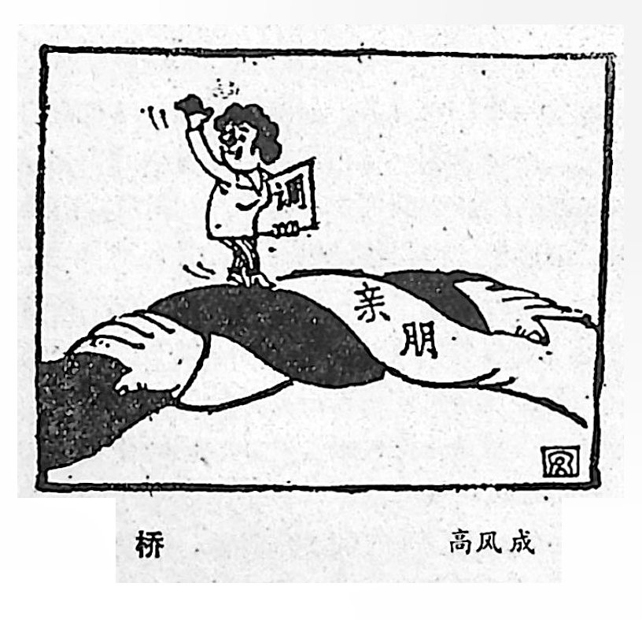

高风成 《人事》1987年第3期（总第18期），第44页
桥
Bridge
- Text in the drawing
- 亲朋 / 调
Relatives and friends / Transfer - Description
- Two clasped arms, one sleeve labeled “relatives and friends,” make an arched bridge; a smiling young woman strides across it, waving her transfer papers.
- Note
- 调动, a job transfer, required approval from both work units and was among the scarcest favours a cadre could arrange.
- Artist
- Gao Fengcheng 高风成
- Published in
- 《人事》1987年第3期（总第18期）, p. 44
- Themes
- Connections (guanxi) · Nepotism · Paperwork and documents

Cite
Gao Fengcheng, “桥” [Bridge], Renshi (Personnel) 《人事》, 1987, no. 3, p. 44.